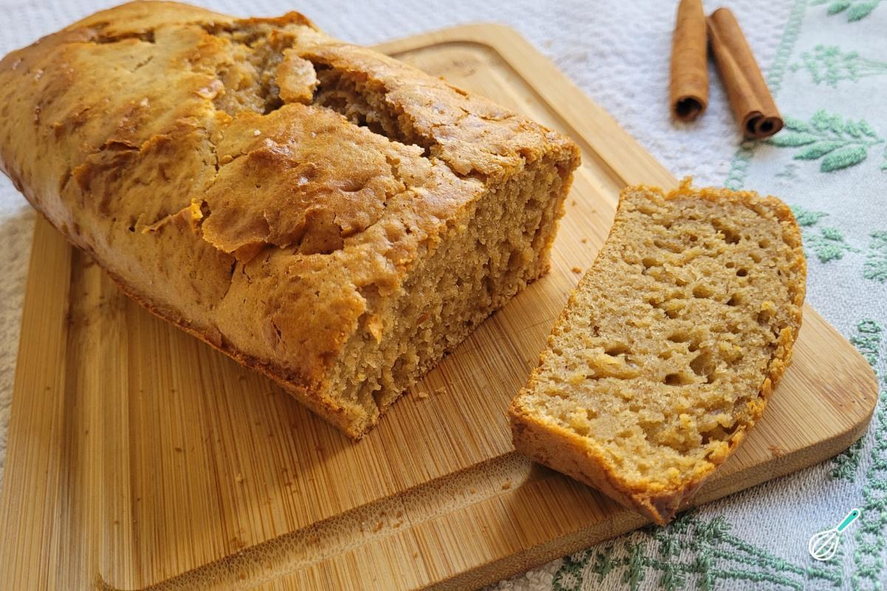

Doces · Tortas e bolos
Bolo de especiarias

Ingredientes
- 2 xícaras de farinha de trigo
- 1 xícara de açúcar
- 1 colher (sopa) de fermento em pó
- 1 colher (chá) de sal
- 1/2 colher (chá) de bicarbonato de sódio
- 1/2 colher (sopa) de cravo-da-índia em pó
- 1 colher (sopa) de canela em pó
- 1/2 xícara de margarina
- 3/4 xícara de açúcar mascavo
- 1 xícara de creme de leite azedado com 1 colher (sopa) de suco de limão
- 3 ovos
- 1/2 xícara de nozes picadas
Modo de preparo
- Preaqueça o forno em temperatura média (180 °C). Misture a farinha, o açúcar, o fermento, o sal, o bicarbonato, o cravo e a canela.
- Acrescente a margarina, o açúcar mascavo e o creme azedado; misture até a farinha umedecer.
- Bata na batedeira 2 minutos em velocidade média. Junte os ovos e bata mais 2 minutos. Incorpore as nozes.
- Despeje numa forma de bolo inglês (7,5 × 12 × 25 cm) untada e enfarinhada. Asse 30 a 35 minutos. Desenforme após 10 minutos, deixe esfriar e congele.
Observação: Congelamento: cubra com plástico, congele, embrulhe em alumínio ou filme e coloque num saco plástico sem ar. Descongelamento: temperatura ambiente por 2 horas, forno por 10 minutos ou micro-ondas em descongelar por 3 minutos.